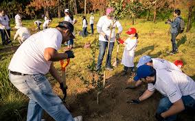

Calor en Suchiapa, Chiapas
Suchiapa, ubicado en Chiapas, México, es conocido por sus altas temperaturas, especialmente durante el verano. Conozca más sobre el impacto del calor en nuestra comunidad y cómo puede ayudar a mitigar sus efectos.

los árboles producen oxígeno, purifican el aire, forman suelos fértiles, evitan erosión, mantienen ríos limpios, captan agua para los acuíferos, sirven como refugios para la fauna, reducen la temperatura del suelo, propician el establecimiento de otras especies, regeneran los nutrientes del suelo y mejoran el paisaje.

contactanos y unete al grupo de reforestacion, aporta tu granito de arena por un planeta verde y bonito.
Te invitamos a ser parte de este moviento.